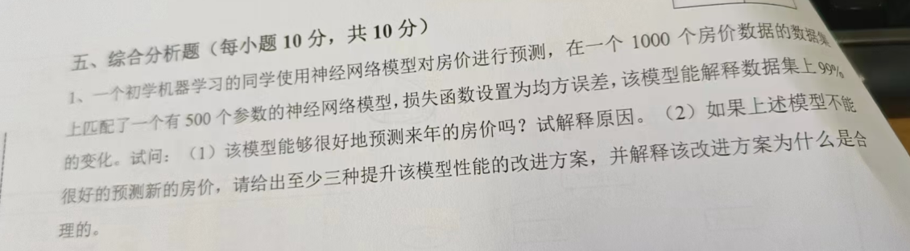

考试信息
考试时间2025年1月4日，周六下午15:00-17:00
安大部分：
- 简答题20分，作图题10分，计算题10分，分析题10分
- 知识点涉及：特征选择，朴素贝叶斯，线性回归（作图），主成分分析（作图），决策树（以西瓜为例），集成学习
本校部分:
- 选择题20分，填空题10分，分析题10分，简答题10分，其中选择题，填空题来自于学堂在线
- 分析题和简答题知识点涉及：测试集，验证集的产生方法，房价或股票预测
特征选择
子集搜索
用贪心策略选择包含重要信息的特征子集子集评价
评估某个特征子集的质量，判断该子集是否适合作为最终的选择特征选择的方法
过滤式：先对数据集进行特征选择，然后再训练学习器，特征选择过程与后续学习器无关。
包裹式：把最终将要使用的学习器的性能作为特征选择的评价准则。
嵌入式：接将特征选择过程与学习器训练过程融为一体，两者在同一优化过程中完成，融入损失函数中。
房价预测

1) 该模型能够很好地预测来年的房价吗？试解释原因。
该模型不一定能很好的预测来年的房价。原因：
过拟合风险：500个参数相对于1000个数据点可能过多，导致模型在训练数据上表现良好，但在未见过的数据（如来年房价）上泛化能力差。
数据局限性：房价受多种因素影响，如政策、经济环境、地理位置等，而这些因素可能未在数据集中充分体现。
时间序列特性：房价数据通常具有时间序列特性，即当前价格受过去价格影响，且未来价格可能受未来事件影响，这些在静态神经网络模型中难以捕捉。
(2) 如果上述模型不能很好地预测新的房价，请给出至少三种提升该模型性能的改进方案，并解释该改进方案为什么是合理的。
方案一：增加数据量并引入更多特征
合理性：增加数据量可以提高模型的泛化能力，减少过拟合风险。
方案二：使用正则化技术
合理性：正则化技术（如L1正则化、L2正则化）可以通过对模型参数的惩罚来防止过拟合。
方案三：使用时间序列模型或混合模型
合理性：房价数据具有时间序列特性，因此使用时间序列模型（如ARIMA、LSTM等）可以更好地捕捉房价随时间变化的规律。
朴素贝叶斯
朴素贝叶斯（Naive Bayes）是一种基于贝叶斯定理的简单概率分类算法。它假设特征之间相互独立
（即“朴素”假设），尽管这一假设在现实中通常不成立，但朴素贝叶斯在许多实际应用中表现优异，尤
其是在文本分类、垃圾邮件过滤等领域。
- 先验概率：
- 条件概率：
- 后验概率：
- 似然概率(似然度)：
- 边际概率(边际似然度)：
独立事件（概率论）
x，y两个事件，若任一事件发生与否不影响另一事件发生的可能性，则称x与y是相互独立的事件，即有p(x)p(y)=p(x·y)
例子
给定训练例子集如下表。依据给定的训练例子，使用朴素贝叶斯分类器进行分类。给定类别未知例子<高度=矮，头发=红，眼睛=兰>，计算这个例子的类别。（计算类别时要先列出式子，然后再带入具体的数。）
| 序号 | 高度 | 头发 | 眼睛 | 类别 |
|---|---|---|---|---|
| 1 | 矮 | 淡黄 | 蓝 | + |
| 2 | 高 | 淡黄 | 蓝 | + |
| 3 | 高 | 红 | 蓝 | + |
| 4 | 高 | 淡黄 | 褐 | - |
| 5 | 矮 | 黑 | 蓝 | - |
| 6 | 高 | 黑 | 蓝 | - |
| 7 | 高 | 黑 | 褐 | - |
| 8 | 矮 | 红 | 褐 | - |
求
求
由独立事件可得
分别计算正例和负例概率，比较大小得出预测条件
决策树
信息熵
信息增益
信息增益率
基尼指数
F1度量
给定混淆矩阵
| 预测正例 | 预测反例 | |
|---|---|---|
| 实际正例 | ( TP = 2 ) | ( FN = 3 ) |
| 实际反例 | ( FP = 4 ) | ( TN = 5 ) |
其中：
- TP (True Positive)：模型正确预测为正例的数量（2）。
- FN (False Negative)：模型实际为正例，但预测为反例的数量（3）。
- FP (False Positive)：模型实际为反例，但预测为正例的数量（4）。
- TN (True Negative)：模型正确预测为反例的数量（5）。
步骤1：计算 Precision（查准率）
公式：
代入数据：
步骤2：计算 Recall（查全率）
公式：
代入数据：
步骤3：计算 F1 Score
公式：
代入数据：
计算：
最终结果
F1 度量 = 0.364
测试集和验证集的产生方法
1. 定义
- 测试集：用于评估模型的最终性能，测试模型的泛化能力（即在未见数据上的表现）。测试集的数据不能参与模型的训练或调优。
- 验证集：用于调节模型的超参数和选择最佳模型配置。它在训练过程中用于模型的优化，但不会影响最终模型的泛化评估。
2. 测试集的产生方法
测试集的产生方法主要包括以下几种：
随机划分（Random Split）(留出法)：
- 方法：从原始数据集中随机抽取一定比例的样本作为测试集，其余部分作为训练集。通常，数据集按70%/30%、80%/20%或90%/10%的比例划分。
- 优点：简单、直观，适用于数据量较大的情况。
- 缺点：划分的结果可能会受到数据分布的影响，尤其是当数据集较小或数据本身存在明显的偏差时。
K折交叉验证（K-Fold Cross Validation）：
- 方法：将数据集分成K个子集，每次选取一个子集作为测试集，其他K-1个子集作为训练集。这个过程重复K次，每次使用不同的子集作为测试集。
- 优点：通过多次训练和验证，能更全面地评估模型的性能，减少因单次划分而带来的偏差。
- 缺点：计算开销较大，特别是数据集很大的时候。
留一交叉验证（Leave-One-Out Cross Validation, LOOCV）：
- 方法：每次仅将数据集中的一个样本作为测试集，其余样本作为训练集，进行模型训练和评估。这个过程会针对数据集中的每一个样本重复一次。
- 优点：对于小数据集而言，这是一个非常彻底的评估方法。
- 缺点：计算量大，适用于数据集较小的场景。
自助法：
- 方法：自助法是一种通过重复抽样来生成多个子集的方法。具体来说，它从原始数据集中有放回地随机抽取数据点，生成多个新的训练集和测试集。在每次抽样时，某些样本可能会重复出现，而有些样本则可能不会被选中。
- 优点：由于训练集和测试集是通过随机抽样获得的，因此评估结果更稳定。自助法可以利用有限的数据多次进行训练和测试，对于数据量较少的情况特别有用。对于小数据集，能有效提高模型的鲁棒性。
- 缺点：训练集可能会包含重复的样本，而测试集则会缺少一些原始数据的样本。由于每次测试集都只包含部分样本，因此可能会导致测试集的评估结果较为保守。
训练集可能会包含重复的样本，而测试集则会缺少一些原始数据的样本。由于每次测试集都只包含部分样本，因此可能会导致测试集的评估结果较为保守。
分层抽样（Stratified Sampling）：
- 方法：这种方法特别适用于类别不平衡的数据集。划分数据集时，确保每个类别在训练集和测试集中的分布大致相同。通常用于分类任务，确保训练集和测试集能够代表原始数据的类别分布。
- 优点：对于不平衡数据集，能有效避免划分时类别分布失衡的问题。
- 缺点：相较于普通的随机划分，略微复杂一些。
时间序列划分（Time Series Split）：
- 方法：适用于时间序列数据，通常按照时间的顺序进行划分，确保训练集的时间点早于测试集的时间点。例如，使用前70%的数据作为训练集，后30%的数据作为测试集。
- 优点：避免了数据泄漏，保持了时间顺序。
- 缺点：不适用于非时间序列数据，且测试集数据量可能有限。
总结：
- 随机划分适合大多数场景。
- K折交叉验证适合模型评估时使用，能减少过拟合的风险。
- 分层抽样适用于类别不平衡的数据集。
- 时间序列划分适用于时间相关数据。
3. 验证集的产生方法
验证集用于模型调优，以下是常见的验证集产生方式：
从训练集中划分：
- 在训练集内再随机划分一部分作为验证集。常用比例是 80% 训练，20% 验证。
- 如果数据量较少，这种方式可能影响训练数据的充分利用。
K 折交叉验证：
- 将数据分为 ( K ) 个不重叠的子集，每次将一个子集作为验证集，其余作为训练集，重复 ( K ) 次。
- 最终结果取 ( K ) 次验证的平均值。
留一法（特殊的交叉验证）：
- 每次将数据中的一个样本作为验证集，其余样本作为训练集，循环进行。
- 适用于小数据集，但计算开销较大。
时间序列划分（适用于时序数据）：
- 确保验证集的数据在时间上晚于训练集的数据，以模拟未来数据的真实预测情况。
总结
- 测试集的产生：从原始数据集中随机划分或者通过时间序列划分，始终不参与训练和调优。
- 验证集的产生：从训练集中划分，或者通过交叉验证等方法动态生成，用于模型的超参数优化和调优。
均方误差
均方误差（Mean Squared Error, MSE）是评估回归模型预测性能的常用指标，它衡量的是模型预测值与真实值之间的差异。均方误差越小，表示模型的预测效果越好。
均方误差的计算公式
假设我们有一个数据集，共有 (n) 个样本，其中每个样本的真实值为 (y_i)（真实值），模型的预测值为 (\hat{y}_i)（预测值）。则均方误差（MSE）的计算公式为：
其中：
- (y_i) 是第 (i) 个样本的真实值。
- (\hat{y}_i) 是第 (i) 个样本的预测值。
- (n) 是数据集中的样本数量。
知识点
- 贝叶斯分类器是生成式模型。虽然它最终能够进行分类任务，但它的核心思想和建模方式属于生成式模型。
- 多样性是集成学习的关键
- 通过拉格朗日乘子法可以得到支持向量机的对偶问题
- 如果原始空间是有限维（属性数有限），那么一定存在一个高维特征空间使样本线性可分。
- 若一个对称函数对于任意数据所对应的核矩阵半正定，则它就能作为核函数来使用
- 任何一个核函数，都隐式地定义了一个再生核希尔伯特空间
- 求解替代函数得到的解是否仍是原问题的解，理论上称为替代损失的一致性问题。
- 在统计学习中，归纳偏好项通过结构风险相关的项确定
- 经验风险对应的是模型与训练数据之间的拟合程度，即损失函数本身
- 从贝叶斯估计的角度来看，正则化项可认为是提供了模型的先验概率。
- 支持向量机对偶问题得到的目标函数最优值是原始问题目标函数最优值的下界
- 支持向量机的解具有稀疏性
- 计算学习理论中最重要的理论模型是PAC(概率近似正确)模型, 以很高概率得到很好的模型
- NFL(No Free Lunch)定理：没有一种学习算法能够在所有问题上都优于其他所有算法。一个算法a若在某些问题上比另一个算法b好，必存在另一些问题没算法b好
- 为了说明模型在统计意义上表现好，我们最需要考虑比较检验
- McNemar检验是基于列联表的检验方法
- 在训练集上的误差被称作经验误差
- 当学习任务对数据分布的轻微变化比较鲁棒且数据量较少时，适合使用自助法划分数据集
- 当我们使用留一法进行评估时会出现什么问题: 训练模型与使用整个数据集训练的模型差异大
- 最小二乘参数估计得到的线性回归模型满足均方误差最小
- 基于均方误差最小化来进行模型求解的方法称为最小二乘法
满秩时多元线性回归的最小二乘解是唯一的 不满秩时多元线性回归需要引入正则化 - 广义线性模型中，
是联系函数 反映了x作为正例的相对可能性，这个量在统计学中被称为几率 - 处理类别不平衡问题时，通过丢掉一部分大类样本使得训练集平衡的方法被称为欠采样
- 对率回归可以得到样例是正类的概率的近似估计
- 对率回归需要事先假设数据分布
- 后剪枝过程在生成完全决策树后，自底向上对树中所有非叶结点进行考察。
- 剪枝—>过拟合
- 支持向量机试图寻找满足什么条件的超平面？ 在正负类样本”正中间”的
- 两个异类支持向量到超平面的距离之和称之为间隔
- 在使用SMO方法优化支持向量机的对偶问题时，每次需要选择2个变量并固定其他变量不变。
- 支持向量机的核心思想是最大化间隔。
- 填空题判断是否为核函数：加一是，减一否
- 多层前馈网络具有的强大表示能力称为神经网络的万有逼近性
- BP算法的全称为误差逆传播算法
- 在误差目标函数中增加连接权平方和这一项后，训练过程将偏好比较小的 连接权
- 贝叶斯最优分类器：对每个样本
选择能使条件风险 最小的类别标记 - $1-R(h^)$反映了分类器所能达到的最*好性能
- 极大似然中，若直接连乘，易造成下溢，通常使用对数似然
- 对数似然中，一般对概率取对数，然后进行求和
- 当训练集变大时，拉普拉斯修正所引入的先验的影响也会逐渐变小
- 集成学习中，后一个个体依赖于前一个个体的方法称为序列化方法
- Boosting是一种同质集成学习方法。
- k均值聚类属于原型聚类
学堂在线考试：
- 软间隔支持向量机与硬间隔支持向量机的对偶问题差别仅在于对偶变量的约束不同
- 正则化问题包含结构风险和经验风险
- 若任务中数据的属性是连续值，此类任务称为不确定
- 如果决策树过拟合训练集，减少决策树最大深度是一个好主意
- ID3 算法本身不能直接解决过拟合问题，因为它倾向于完全拟合训练数据，尤其是在数据中存在噪声或数据集较小的情况下。这种倾向会导致过拟合问题。
- 对于参数估计过程，统计学界的频率主义学派认为参数虽然未知，但却是客观存在的固定值，因此，可通过优化似然函数等准则来确定参数值。
- 线性模型既可以处理回归任务，也可以处理分类任务
- 即便计算机具有无限精度，多元线性回归也需要使用正则项
- 纠错输出码的理论性质越好，最终产生的模型分类性能不一定就越好。
- 神经网络的输出是输入的线性函数
- 包含足够多神经元的单隐层神经网络具有万有逼近性
- 只要模型的损失函数关于模型权重可微，就可以使用BP算法优化
- Sigmoid函数在一点的函数值总是大于该点的导数值